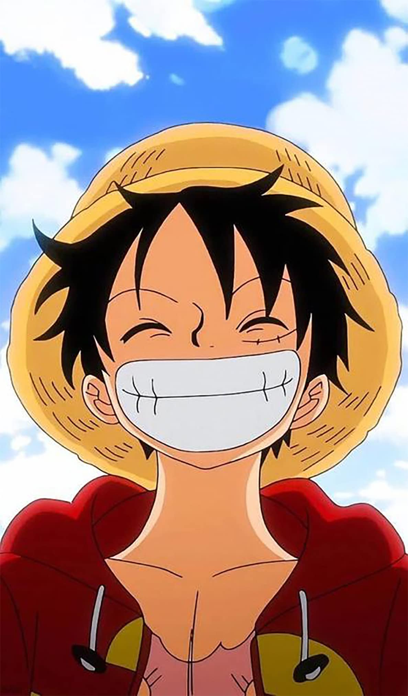

My Resume
Bio Data

- Name: Monkey D. Luffy
- Age: 19
- Address: Foosha Village, East Blue
Education
-
Uneducated
P.S. Was skipping Classes to enhance my Devil Fruit ability
Work Exprience
-
During the Drum Island Arc, i wore two different parkas, the first being a dark red parka with fur on the cuffs, hood, and hem, and then a checkered, hooded parka with the colors white, orange and bright yellow, which Nami wore in the beginning.
-
During the Arabasta Arc, i wore desert robes consisting of a dark red robe with three white rings decorated along both sleeves and a light blue wrap over his head.
-
During the Skypiea Arc, i wore a black wristband around his left wrist with a white bangle over it. In 37 Volume SBS, Oda said that two members of his crew lent him accessories: a black wristband by Usopp and a white bracelet by Sanji.
-
During the Long Ring Long Land Arc, Luffy wore an afro on his head, dark red shorts, and red bandages on his feet, getting an image of a blue flaming skull and crossbones painted on his chest as well, when i was fighting Foxy.
-
During the Enies Lobby Arc, i wore black shorts with more pockets than his blue shorts, which i noted i could not fit his meat in.
-
During the Post-Enies Lobby Arc, Luffy wore a white T-shirt with the Galley-La Company emblem on it in red; red liners around the top, shoulders, and collar; and navy-blue shorts.
-
During the Thriller Bark Arc, i wore an orange vest and red shorts.[55] After the battle against Moria in Thriller Bark, Luffy wore a dark decorated, jeweled armband around his left bicep, given to him by Nami. This armband was later revealed to be a map that leads to Captain John's lost treasure, which Buggy sought for some time; Luffy handed the armband over to Buggy in exchange for his services in navigating through Impel Down.[57]
-
During the Sabaody Archipelago Arc, in the manga, i wore a blue vest and red shorts (which can also be seen on the cover of Volume 52). In the anime, i wore the same blue vest, but dark blue shorts.
-
During the Amazon Lily Arc, Luffy wore a light blue vest with red shorts.
-
During the Impel Down Arc, Luffy wore his outfit from his stay on Amazon Lily until after his fight with Magellan, at which point i replaced his light blue vest with a bright yellow vest given to him by Inazuma.
Skills
- Eating
-
Gear 1
(Fighting with normal streachy body)
-
Gear 2
(Increasing blood pressure to fight at vey high speed[you can't evcen see me])
-
Gear 3
(Making a part of body very giant by blowing air into it)
-
Gear 4
(Fighting with a giant body with infused haki, althought it drain haki too much. only available for 10 min)
-
Gear 5
(Sun God P.S. yet to be discovered)
Award And Certifications
- Got The Best Crewmates
- I have the Best Cook
- Going Merry
- Thousand Sunny
- Damn Octopus
- Treasure
- Straw Hat
Summary
- I Am Gonna Be The King of Pirates
Other
To Be Continued
© 2023 Luffy